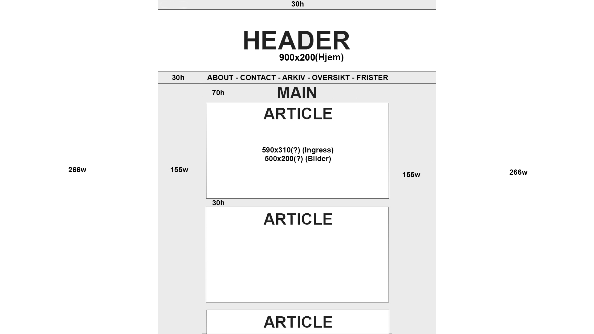
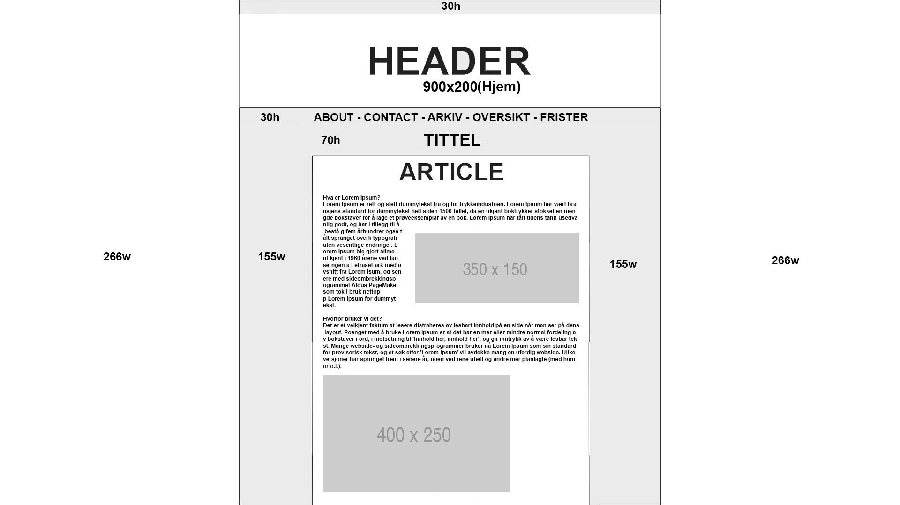

about this page
Del 1 - Wireframe / Strukturskisse
Forside: Jeg startet først med å lage et wireframe slik at jeg kunne få en oversikt over hvordan nettstedet kom til å se ut på slutten, for lett gjennomgang begynte jeg først å tegne opp logoen og banneret på toppen etterhvert navigasjonsbaren slik at brukeren kan lett finne seg rundt på nettstedet.
Etter dette fant jeg ut at jeg måtte legge til flere komponenter på forsiden så jeg delte baren opp i og satt alle artiklene til venstre også kalendar og viktig informasjon på høyresiden.
Artikkel: Artikkel siden ble laget først som en mal slik at jeg kunne finne ut hvordan alle sidene skulle se ut på nettstedet. Jeg tenkte først å ta forskjellige bildestørrelser på innleggene basert på om bildet skulle ha float eller ligge midt i artikkelen.
Del 2 - Inspirasjon
| Beskrivelse | URL |
|---|---|
| VG: Første siden jeg bestemte meg for å besøke når det kom til artikler, jeg var ikke veldig imponert men jeg fikk noe ut av å se på selve layouten var veldig sikker på hvor alt skulle ligge. | http://www.vg.no/ |
| Fredrikstad Blad: Etter som jeg ikke likte VG ble jeg ennå skuffet når jeg bestemte meg for å besøke den lokale nettavisen sin nettside. | https://www.f-b.no/ |
| Studieweb: Kom opp etter et kjapt google søk som involverte "artikkel" Pent og ryddig, veldig minimalt tenkte jeg. | http://studieweb.no/ |
| Ung: Også et kjapt google søk, her fikk jeg ideen av å ha sidebarer for kalenderen og viktig informasjon | https://www.ung.no/ |